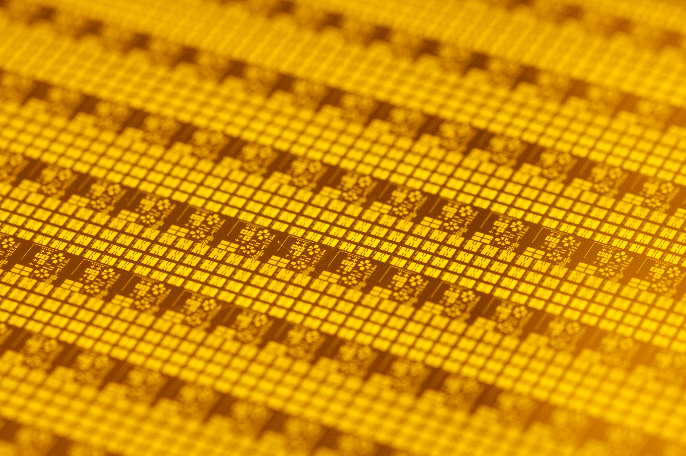
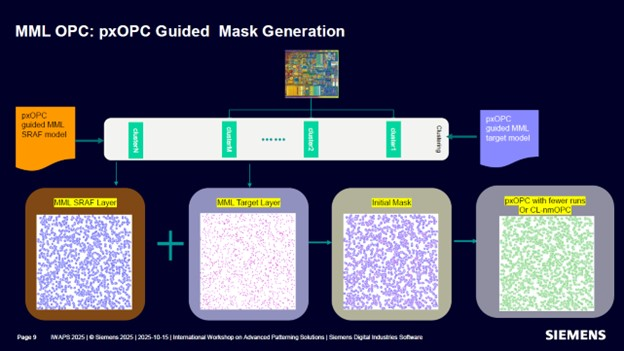
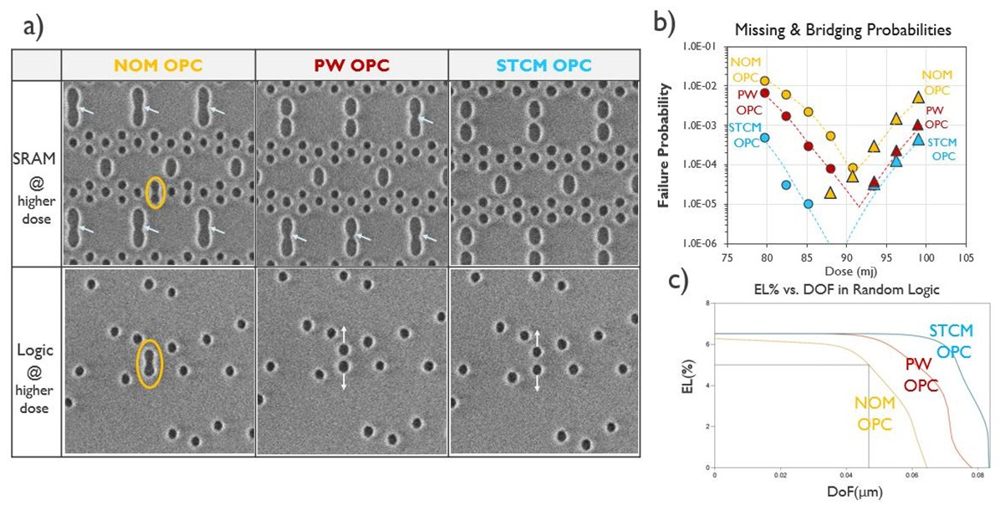
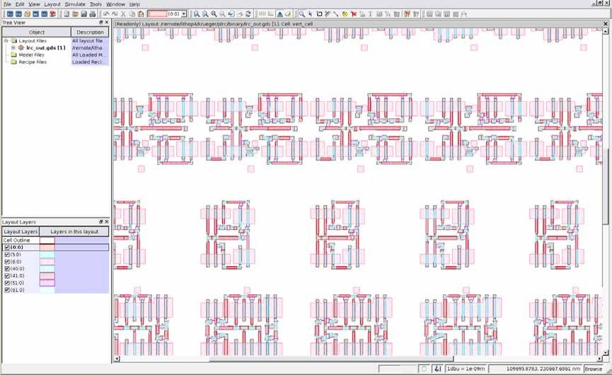
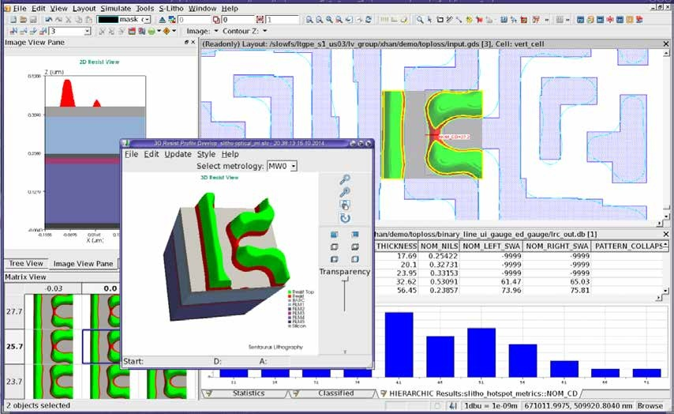
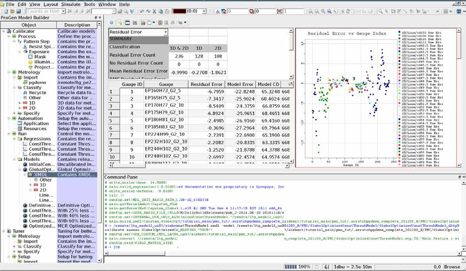

第一种切法：晶棒 → 薄圆片
就像圆柱形食材横切后得到圆片。刚制成的晶圆可以像镜面一样，没有照片里的方格。方格中的电路，是后续制造加工的。
把半导体里的陌生名词，变成看得见的实物、流程和问题。
再找出你的模型，能帮工程师完成哪一步。
OPC 是提前修改掩模图形，让经过光刻后印出的图形，更接近设计目标。
这里有两种关系：晶圆与裸芯片是“切割前后”；封装芯片与裸芯片是“外部结构与内部核心”。先看同一颗橙色芯片 A 的去向，再看下面的实物照片。
以常见硅晶圆为例：原料经过提纯，制成高纯硅，再人工生长成大致圆柱形的单晶硅棒。常见的 CZ 方法是在熔融硅中放入籽晶，一边旋转一边拉出晶体；随后整形、切片、研磨、抛光和清洗，得到晶圆。天然矿物提供原料，圆形晶圆则是加工制造出来的。
就像圆柱形食材横切后得到圆片。刚制成的晶圆可以像镜面一样，没有照片里的方格。方格中的电路，是后续制造加工的。
先在整片晶圆上加工很多矩形电路区域，再沿它们之间的横竖切割道分离。芯片常为矩形，也可能近似正方形；无需把整个圆切成一个大方块。
边缘放不下完整芯片的区域，通常不会作为成品芯片；即使内部形状完整，也还要通过质量测试。切割可以使用精密刀片或激光等工艺，通常借助胶膜固定，切后再逐颗拾取。
电路先在整片晶圆上加工。每个重复区域对应一颗待分离的裸芯片。
把 A 从晶圆切下来，它就是一颗 die。晶圆上的其他区域也可切成各自的 die。
将 A 固定、连接并保护，形成封装产品。外壳是容纳 A 的结构。
结构与尺寸均为教学示意。这里展示单颗 die 的引线键合封装；多芯片封装可包含多个 die，连接方式也可能使用凸点。照片是不同产品的例子。
通常是圆形的薄片。表面的重复小区域，是一颗颗芯片的加工区域。常见硅晶圆有 200 mm、300 mm 等直径。
从晶圆上切割得到的单颗芯片。电路结构在它上面；它通常还需要电连接、保护和散热。
我们在电路板上常见的器件。内部包含裸芯片；外部可能有引脚、焊球或金属接点。
晶圆上的小方格不是一个个晶体管，而是芯片区域。彩虹色也不是电路在发光，常与薄膜和表面对光的反射有关。不同产品的形状和外观会不同。上面三张照片来自不同产品，并非同一颗芯片的连续加工实拍。
简化顺序：实际流程还包含晶圆测试、多个中间检查和可能的返工。
芯片结构要经过很多轮加工。光刻的作用，是把某一层需要的图形转移到晶圆表面的光刻胶上。
伦敦纳米技术中心的光刻洁净实验室。这里展示环境，不是量产 EUV 光刻机。橙色照明有助于避免短波长环境光影响光刻胶。
已知成像系统会让图形失真，提前设计一个“预失真”的输入，让输出更接近目标。
它是带工艺与制造约束的逆问题。掩模与目标长得越像，并不代表最后印得越好。
已有成熟光刻模拟器，可以从掩模计算光强并预测光刻胶轮廓。做 OPC 应用通常不需要从零编写光学求解器。但要预测某条真实产线，必须使用经过该工艺校准、验证的模型与条件；软件本身不会自动知道客户的光刻胶、设备和加工响应。
实现光学与工艺计算、数值求解和接口。由工具厂商或研究项目提供。
包含模型参数、照明 / 光学设置、掩模与光刻胶响应等。通常由工艺 / OPC 团队及厂商配合校准。
将预测与实际尺寸或轮廓比较，留出独立样本，确认误差与适用范围。
| 你要做的事 | 通常用什么 | 是否需要自己建模 |
|---|---|---|
| 入门与算法实验 | OpenILT 等研究模拟器与基准模型 | 可以直接使用；结果只代表这些模型条件 |
| 真实工艺的 OPC 应用 | 客户已校准的模型 + Calibre / Proteus 等工具 | 已有验证模型时先复用；缺失或工艺变化时需要校准与验证 |
| 研究新材料或工艺效应 | S-Litho 等更详细的物理仿真 | 需配置物理条件；可能需模型开发与实验校准 |
全芯片迭代常采用计算较快的紧凑模型；更详细的物理仿真可以用于局部研究、参考验证与模型开发。模型复杂度要与用途和计算成本匹配。
如果你来做 Agent：第一步是了解合作方现有模拟器、工艺模型、工具接口与验证样本。先复用已有能力，把实验闭环做好。神经网络代理模型则是可另行研究的加速方案。
切换补偿方式，观察目标、掩模和预测轮廓的区别。
希望最终得到的形状
直接采用目标形状
线端缩短、角变圆
本演示用人为绘制的几何变化帮助理解，不计算真实光场、剂量、焦距或 EPE，不代表任何设备或工艺效果。实际结果必须由校准模型与量测验证。
SRAF 是掩模上的真实结构。“不印出”指曝光、显影后，不希望它在晶圆表面的光刻胶里形成独立的线或孔；并非不制作在掩模上。
| 位置 / 阶段 | 主图形 | 辅助结构 SRAF |
|---|---|---|
| 掩模上 | 有真实结构 | 也有真实结构 |
| 曝光时的光场 | 影响光强分布 | 也影响光强分布 |
| 显影后的晶圆光刻胶 | 希望形成目标结构 | 希望没有独立结构 |
光刻不是把每个小图形独立复制。主图形和附近辅助结构共同改变衍射光场，经光学系统后形成新的光强分布。SRAF 的位置、宽度和形状经过选择，可以改善主图形成像对比度、边缘陡峭程度或工艺窗口。
一个直觉是：给孤立图形安排“光学邻居”，让它的成像环境更合适。实际效果取决于照明和工艺，并非随便加两条线就有效。
示意中，主图形边缘的光强变化更陡。阈值轻微变化时，交点位置移动更小，意味着尺寸对这类变化更不敏感。真实工艺需要多条件仿真验证。
它的尺寸、位置与工艺条件经过选择，使其仍能改变光场，但自身的光刻胶响应不足以形成独立结构。合格范围指已验证的焦距、曝光剂量等条件范围；必须检查范围内的 SRAF 意外印出风险。若晶圆上多出辅助条或孔，就是需要排查的问题。
曲线由教学公式绘制，不是物理仿真或量测。为解释阈值概念，示意采用亮区域对应目标开口；实际图形极性与光刻胶响应随工艺变化。不能只用“低于一个固定阈值”判断所有工艺中的 SRAF。
来源：Siemens SRAF 成像改善与防止印出 ↗依据线宽、间距和图形类型，应用预先制定的修正规则。
将边缘切成小段，根据仿真误差迭代调整。局部与邻域相互影响。
可优化像素、曲线等表示；同时面临计算与掩模制造约束。
以下是一个典型开发流程，不代表一天完成所有环节。日常调优常从已校准模型开始：取局部片段、设置配方、运行修正、查看误差、修改并回归。模型校准通常是独立任务。
任务是让一段线的末端印到目标位置。工程师拿到目标图层、已校准模型、现有 Recipe 和验收规则，先运行基线，再提出候选。下面始终追踪同一片段，观察每一步怎样把输出交给下一步。
以下是虚构教学案例：图形不按比例，数值只用于解释判断过程，不是实际工艺参数、量测或物理仿真。它与后面的厂商实测图属于不同例子。
希望在晶圆光刻胶上得到的边界
| 同一片段的记录 | 理想条件最大 EPE | 扫描条件最差 EPE | 判断 |
|---|---|---|---|
| 基线 recipe_v0 | 8 nm | 12 nm | 需要修正 |
| 候选 recipe_v1 | 2 nm | 6 nm | 理想条件好，波动条件仍失败 |
| 候选 recipe_v2 | 3 nm | 4 nm | 局部 EPE 通过，继续检查其他要求 |
假设本例 EPE 限值为 5 nm，全部数字为教学设定。局部 EPE 通过不代表掩模规则、随机缺陷、完整设计和实际制造都通过。
工程师选择片段、配置模型与规则、解释失败并修改 Recipe；OPC 引擎执行仿真和迭代移边，产生候选掩模；验证器检查条件、尺寸和违规；界面把文件、轮廓、坐标和统计结果呈现出来。每次重跑是一项可追溯任务，不是在照片上随手涂改。
Verilog 仿真器模拟数字电路行为；光刻仿真器预测光场与工艺结果。这里输入的是几何图形和工艺条件，不是计数器或处理器的 RTL。
OPC 开发时，通常在软件中查看 GDSII / OASIS 几何、选取局部版图片段、调整 Recipe 并运行计算。通过规定的验证后，再进入掩模数据准备和制造。实体掩模不会随着鼠标拖动而改变。

这是掩模表面真实图形的近照，不是软件里的版图，也不是晶圆。以常见透射式掩模为例，透明基板与图形化薄膜共同调制光；EUV 则使用反射式掩模。本照片用于认识外观，不对应下方软件截图中的设计。
作者 Sei · 原图与来源 · CC BY-SA 4.0 · 原始照片未修改，页面缩放显示。点击图片可放大。
模型可以提供更好的起点；后续优化和验证仍然必要。最后的独立验证框是教学补充。训练流程未在此展开。

图中将辅助结构预测与主图形预测组合成初始掩模，再由 pxOPC 或曲线 OPC 继续优化。它展示模型如何参与已有求解链，不是绕过后续修正与验证。
© Siemens · 2026-01-29 公开文章 Figure 2，介绍 2025 年技术工作；原图未修改。来源 ↗

左侧是不同 OPC 策略下的晶圆结构，圈出桥连缺陷；右侧比较缺陷概率和工艺窗口。这类证据说明评价不仅要看理想轮廓，还要看工艺波动和实际缺陷。
© Siemens／相关研究团队 · 同一 2026 年文章 Figure 5；已替换为公开原始 1196 × 610 版本，未叠加标注；点击可按原尺寸查看。来源 ↗
三列比较的是OPC 优化时考虑什么，不是三种大语言模型。这里的“模型”主要指描述光刻加工的工艺模型。图中 STCM OPC 是使用随机紧凑模型的方案；厂商正文称其为 stochastic-aware OPC（ST-OPC）。
| 图中标签 | 含义 | 优化时关注什么 |
|---|---|---|
| NOM OPC | Nominal OPC · 标称条件修正 | 标称焦距、剂量下的平均尺寸与边缘位置 |
| PW OPC | Process Window OPC · 工艺窗口修正 | 焦距、剂量等系统性变化后，图形还能否保持合格 |
| STCM OPC | 使用 Stochastic Compact Model · 随机紧凑模型 | 把随机波动导致的缺失、桥连等失败风险纳入修正目标 |
为什么平均轮廓准确仍可能失败？同样的工艺设置，重复加工也会有随机变化。PW 主要处理设定条件的变化；STCM 还描述同一条件下的随机性，两者不是一回事。
图 a 是实际晶圆 SEM，黄色圈标出桥连；图 b 比较缺失与桥连概率，纵轴是对数刻度；图 c 的 EL 是曝光裕量，DOF 是焦深，表示允许剂量和焦距变化的范围。此处的收益来自随机效应建模与 OPC 优化，不能据此宣称 LLM Agent 已经有效。
厂商会公开论文、流程和演示结果，商业工具的详细培训有时需要注册或授权。客户量产版图、工艺模型和 Recipe 通常是专有资料；研究工具及数据集则可以公开。不能从截图较旧推断工具没有更新，也不能把公开基准当成某家工厂的量产模型。
下方为 Synopsys 官方 2018 年公开资料中的真实截图。原图约 850～920 像素宽，菜单和参数小字无法可靠读清，仅用于认识功能布局。具体按钮、参数名称与授权模块随版本变化。

左侧：文件、模型、Recipe 与图层列表。中央：版图画布，缩放查看几何。上方：菜单与工具栏。不同颜色可以表示不同图层或叠加对象，不能单凭颜色判断哪条是实际晶圆轮廓。
© Synopsys · 官方资料 Figure 1，提取截图，未叠加标注。查看原始资料 ↗ · 点击图片放大。

右上：局部版图与仿真结果叠加。左下：不同工艺条件的结果矩阵。浮动窗口：三维光刻胶形状。右下：数值表与统计图。轮廓好看只是第一步，还要检查尺寸、工艺条件和异常位置。
© Synopsys · 官方资料 Figure 3，提取截图，未叠加标注。查看原始资料 ↗ · 点击图片放大。

左侧组织工艺、量测与拟合流程，中央表格和右侧散点图用于检查模型残差，下方显示命令记录。这是模型开发与校准界面，和日常调整 OPC Recipe 是不同任务；图中数值属于厂商演示数据，不能当作推荐设置。
© Synopsys · 2018 年公开资料 Figure 4，提取截图，未叠加标注。查看原始资料 ↗
打开版图文件，选择顶层 cell 与待处理图层。通过热点列表跳到违规坐标，或缩放、平移到线端、拐角等关注位置。确认查看的是目标、初始掩模还是修正结果。
在版图画布框选区域或按坐标定义 clip，保存边界和图层信息。输入要包含会影响中心成像的周边图形；指标可只评价中心区域。外围宽度依据模型作用范围确定。
局部研究可以复制一份候选，移动边缘、延长线端或调整 SRAF；面向大量图形时，通常修改切段、步长、迭代和特殊处理规则，由求解器执行。保留原始目标供对比。
指定模型、工艺条件和 Recipe，提交局部 OPC 或验证任务。查看日志是否成功，叠加目标与预测轮廓，检查 EPE、断线、桥连和掩模规则。局部改善后重跑固定测试集，再扩大到更完整设计。
| 参数组 | 常见内容 | 怎样使用 |
|---|---|---|
| 版图与区域 | 输入文件、顶层 cell、图层映射、clip 坐标、外围邻域、评价区域、单位与极性 | 定义算哪块、哪层，以及哪些区域参与评价 |
| 工艺模型 | 模型文件与版本；波长、NA、照明、像差；光刻胶响应，必要时包含刻蚀模型 | 通常使用项目已校准模型；不能为改善仿真分数随意改成另一种工艺 |
| 条件扫描 | 焦距偏移、曝光剂量或相对剂量，以及项目规定的条件组合 | 运行多个条件，判断工艺窗口；偏移单位和剂量归一化基准必须明确 |
| OPC Recipe | 边缘切段、检查点、移动步长与上限、迭代上限、停止条件、误差权重、SRAF 规则 | 控制求解器怎样修改掩模，是开发与调优的重要对象 |
| 验证与制造约束 | EPE / CD 限值、桥连与断线检查、掩模最小宽度与间距、SRAF 印出检查 | 决定是否合格，应依据项目要求设定 |
| 计算与追溯 | 任务编号、线程或计算节点、分块配置、日志与输出路径、配置版本 | 控制运行成本，并确保结果可复现 |
此表是跨工具的概念分类，不是某个软件的完整字段列表。具体可调项、单位、范围和默认值必须查对应版本与工艺配置。全芯片任务也可由脚本或计算集群批量运行，GUI 常用于开发、检查和分析。
输入版图与 clip 坐标、模型与 Recipe 版本、修改差异、运行条件、日志与耗时、输出掩模、预测轮廓、违规坐标和前后指标。只有保留这些信息，才能解释改善来自哪里，并检查是否引入新问题。
预测边缘离目标边缘多远。
线宽、孔径等重要尺寸是否合格。
焦距、剂量变化后，还能合格的条件范围。
掩模本身能否按规定制造。
容易出现不合格图形的局部区域，不等同已发生缺陷。
计算、内存、等待和工程师投入。
工具、工艺模型、Recipe 和验证规则必须配套。购买软件，不等于拥有某家工厂的工艺能力。
| 工具 / 平台 | 主要角色 | 定位 |
|---|---|---|
| Siemens Calibre ↗ | nmOPC 修正、nmSRAF 辅助图形、OPCverify 验证、nmModelflow 校准、pxOPC 逆向优化 | 商业工具系列 |
| Synopsys Proteus ↗ | OPC / ILT 修正、LRC 验证、WorkBench 开发与调试 | 商业工具系列 |
| ASML / Brion ↗ | 计算光刻、建模与掩模优化；公开历史产品包括 Tachyon | 商业方案 |
| NVIDIA cuLitho ↗ | 为计算光刻提供 GPU 加速库 | 计算基础设施 |
| KLayout ↗ | 查看、编辑、程序化处理 GDSII / OASIS 版图 | 开源版图工具 |
| OpenILT ↗ | 仿真、初始化、优化与评价；适合研究闭环 | 开源研究平台 |
| LithoBench ↗ | 学习式成像与掩模优化的版图片段和基准 | 研究基准 |
依据厂商与项目公开资料整理于 2026-10-12；具体模块、接口与可用功能受版本及授权配置影响。研究工具不能直接等同量产签核工具。
模型驱动 OPC 本来就在做“修改掩模 → 仿真 → 评价 → 再修改”。困难在于：在可接受的计算时间里，让大量相互影响的图形，在多个工艺条件下都满足成像和制造要求。
有一个能计算 loss 的前向模型，还需要解决优化变量、搜索方向、约束与计算成本。即使前向模型完全准确，逆向优化也未必容易。
一条边可以切成多段，每段分别移动；辅助结构还有位置、宽度和长度等变量。附近图形共同影响光场：把 A 向外扩，可能修好 A，却让 B 变宽，甚至造成桥连。因此不能把每段边缘孤立优化。
纯数学示例：100 段边缘，每段只有“向内、不动、向外”三种选择，也有 3100 种组合。这不是实际工具的搜索规模。工具会利用局部作用范围、重复结构和优化算法减少搜索，不会枚举所有组合。
规则可以高效处理已知情况，例如依据线宽和间距加宽某类线条。但邻居的距离、方向、线端和拐角组合变化后，同一补偿量未必有效。模型驱动 OPC 用仿真评价具体环境；修好线端也可能恶化线宽，优化需要处理冲突和局部最优。
候选 A 在理想条件下更接近目标，但剂量或焦距稍变就桥连；候选 B 的理想轮廓略有偏差，却在规定范围内保持合格。这个假设例子说明：量产需要在工艺窗口内可靠的方案，而非只追求一次仿真的最小误差。每次修改因此常需检查多个条件，并确认 SRAF 不会意外形成独立结构。
优化器可能生成印得很好、却含有过细条、过小间隙或过于复杂边界的掩模。必须同时约束宽度、间距和形状等制造要求。更多切段、更复杂形状与更多工艺条件也会增加求解、验证和数据处理成本。
光学成像之外，光刻胶还有物理、化学响应；必要时还需考虑后续刻蚀。模型用设备和测试晶圆数据校准，仍有误差与适用范围。优化器可能利用模型弱点，仿真成绩必须经过独立检查及适当的实测验证；EUV 的随机缺陷也不能仅靠平均轮廓优化消除。
单独一层就可能包含大量相互耦合的优化变量。多层增加总工作量，并涉及层间对准等要求，但不是 OPC 困难的唯一来源。分块计算需要保留邻域并检查边界；Recipe 换了图层、工艺或图形分布，也需要重新验证。
梯度优化、局部搜索、模拟退火等方法可以指导修改。马尔可夫链本身不是优化算法；MCMC 主要用于采样，若用于候选搜索，还需设计修改方式、评分与接受策略。换一种搜索方法不会自动消除变量耦合、制造约束或仿真成本，也不保证在有限时间内找到全局最优。
模型的价值可以落在三处：提供更好的初始掩模、提出更有价值的修改、加速仿真评价。效果应以验证后的成像质量、工艺窗口和端到端成本衡量。
语言大模型、图形模型和数值优化可以合作。先确定一个具体任务，再选择模型。
OPC 工具已经会“仿真 → 移边 → 重算”。Agent 接入后，先负责跨实验的决策：选择代表性片段、读取错误报告、提出 Recipe 修改、安排运行、比较结果和回归。它通过工具操作几何或配方，不直接改 GDSII / OASIS 的二进制字节，也不必逐个生成顶点。
由实测校准，用于预测轮廓、工艺波动或随机缺陷风险。不是默认指 LLM，也不一定是神经网络。
按 Recipe 和目标函数进行几何修改与迭代。现有求解器本来就在解决逆向优化问题。
基于文档、配置、误差和历史结果选择下一步工具调用。是否改善搜索效率，需要与基线比较。
不能只给模型输出轮廓。还要提供目标、当前候选、工艺与配方版本、误差位置和历史尝试；否则模型不知道哪里不对，也不知道哪些变量允许修改。大文件保留在工具侧，模型可以先读局部几何、统计和结构化报告，需要时再看轮廓叠加图。
| 接口层 | 传什么 | 由谁完成 |
|---|---|---|
| 底层文件 | 版图、工艺模型、Recipe、输出掩模与轮廓 | 工具读取、计算、保存；模型使用文件引用 |
| 模型输入 | 当前状态、误差报告、约束、历史动作与反馈 | 适配层提取，LLM 判断下一步 |
| 模型输出 | 受约束的参数修改、片段选择、工具调用 | 适配层检查范围，再交给实际 CLI / 脚本 |
| 实验反馈 | EPE、工艺窗口、违规数、工具耗时与回归结果 | 工具给证据，Agent 比较并记录 |
假设目标线端在 y=500 nm，仿真轮廓只到 y=492 nm。Agent 可以提出一次线端补偿实验，但不能直接断定掩模需要延长 8 nm；掩模修改量与打印变化不一定一比一，邻近图形也会影响结果。
{
"state": {
"clip_id": "clip_A",
"recipe_id": "recipe_v0",
"process_model_id": "calibrated_model_A",
"report": "reports/baseline.json"
},
"action": {
"tool": "run_recipe_trial",
"candidate_recipe": "recipes/candidate_v1",
"clips": ["clip_A", "regression_set"]
},
"feedback": {
"quality": "验证后的前后指标",
"cost": "工具运行时间与资源",
"accepted": "是否通过预先固定的规则"
}
}教学用适配层格式，不是某款商业软件的真实命令。实际能力取决于工具版本和授权。第一版可以用现有 LLM；之后用工程师操作与实验记录学习“状态 → 工具调用”，或利用候选动作的执行反馈学习排序和策略。
固定工艺模型、验收规则、测试片段和实验预算，比较原有 Recipe、普通参数搜索、Agent。看达到同样验收标准需要多少次仿真、多少总时间和人工投入；或在同样预算下，质量与通过率是否更好。LLM 调用和失败实验的成本也要计入。
只是把人工命令换成聊天调用，贡献是操作自动化；如果能更快选择有效实验，才证明它帮助了优化决策。配方路线由 OPC 求解器改图；直接几何路线由 Agent 指定局部动作、几何工具计算坐标，两者的动作空间不同。
上述 Agent 架构和评估方法是教学设计，不代表网站已连接工业 OPC 工具。
AAAI 2025 的 Intelligent OPC Engineer Assistant 用强化学习搜索 Recipe，再用多模态 Agent 总结规则。效果对应论文的实验设置，不意味着任意工厂都可以直接部署。
阅读原始论文 ↗先做实验分析与配置建议助手：复用现有求解器，减少查资料、整理结果和调参的时间。
比较原始配置、简单参数搜索与 Agent。端到端收益，要计入工具运行和验证成本。
同一张掩模，在不同工艺条件下会有不同结果。每条样本必须能还原它是怎么得到的。
GDSII / OASIS 保存图层、坐标、几何和单元层级，屏幕只是把它们画出来。圆与不规则曲线也有边界；常可用一圈采样点构成的多边形近似，点数和坐标精度决定几何误差。闭合边界确定内部区域，不需要逐像素保存填充。
| 数据对象 | 怎样表示 | 还要记录什么 |
|---|---|---|
| 目标 / 掩模版图 | 多边形顶点、层级实例；曲线可转成短线段 | 单位、坐标平面、图层、极性与变换 |
| 仿真光强 | 二维浮点数组 I[y,x] | 原点、网格间距、工艺条件、归一化方式 |
| 预测 / 实测轮廓 | 沿边界的一圈坐标，必要时附多个轮廓 | 配准、尺度、条件与来源 |
| SEM 显微照片 | 实际灰度像素数组 | 像素尺度、量测条件与噪声；可再提取边界 |
同一形状可以有矢量或像素表示；数据是像素数组，并不意味着它来自生成式模型。仿真和数值优化同样可以输出数组。
下面是实际几何计算的教学例子：原始平滑曲线采样为 128 点闭合多边形，再用 Shapely buffer 向外偏移。不是工业版图，也没有进行光刻仿真。坐标按 nm 解释，默认外扩 10 nm，方便观察变化。
数据变化：外扩 10 nm 后输出 228 个点，工具增加圆角连接点，因此输入和输出顶点不是按序号一一对应。图中连线比较的是原采样点与最近的新边界位置。圆角和曲线都由线段近似，存在小量几何误差；截断数据仅供阅读，完整 JSON 可下载。
原图形 = Polygon(边界点列表)
新图形 = 原图形.buffer(10, join_style="round")
新边界点列表 = list(新图形.exterior.coords)工具使用坐标单位，自己不识别 nm。整体外扩按局部边界方向计算，不是所有 x、y 都加 10。几何操作有效，也不意味着曝光效果改善，仍需仿真验证。
| 任务 | 输入 | 监督 / 反馈 |
|---|---|---|
| 知识问答 | 问题 + 工具版本 + 文档 | 带来源的正确答案 |
| 热点识别 | 掩模 / 版图 + 工艺条件 | 风险位置、类型及验证结果 |
| 成像预测 | 掩模 + 光学与工艺条件 | 光强、轮廓或实测图形 |
| 掩模生成 | 目标图形 + 工艺 + 制造约束 | 经验证的候选掩模及其表现 |
| Recipe Agent | 当前配置 + 图形 + 历史结果 | 动作、工具反馈和独立验证结果 |
周围图形会影响中心的成像。裁剪输入时保留外围上下文；边界大小应依据模型作用范围选择。评价区域和输入区域不必相同。
用公开数据跑通算法闭环；用合作方的工具和工艺建立实验记录；再关联真实量测验证偏差。三层数据的可信度与适用范围不同，不能混用结论。
第一版不必训练大模型。先有可复现的工具、指标和记录，再让模型提出建议。
分清目标、掩模、预测与实测；能解释线端缩短和角变圆。
用 OpenILT 做一个图形：初始化 → 仿真 → 优化 → 评价。
固定图形和条件，比较原配置与简单参数搜索，保留全程记录。
让模型查文档、改配置、运行工具、展示证据，并与基线比较。
不一定。优化目标是经过成像后的轮廓符合要求，所以掩模可能需要故意变形。
还不够。需要检查其他工艺条件、关键风险、掩模制造规则及相应的完整验证。
还原物理尺度和几何，运行匹配的工艺模型与规则检查，在留出图形和条件下评价，并按项目需求验证实测表现。